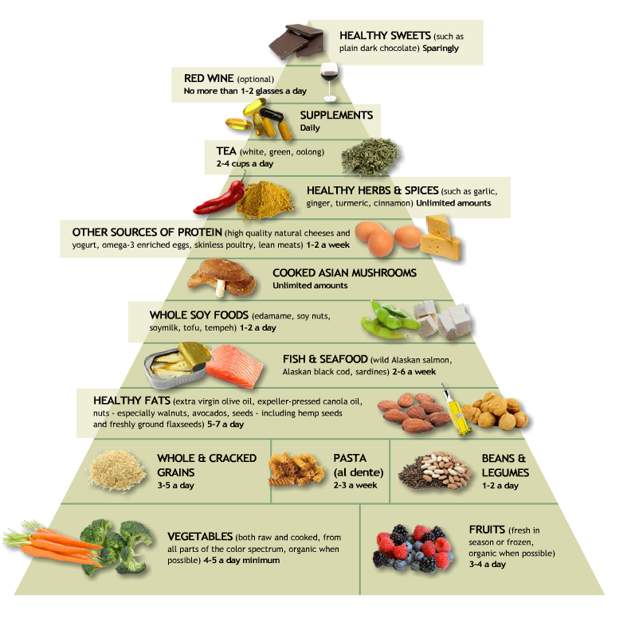
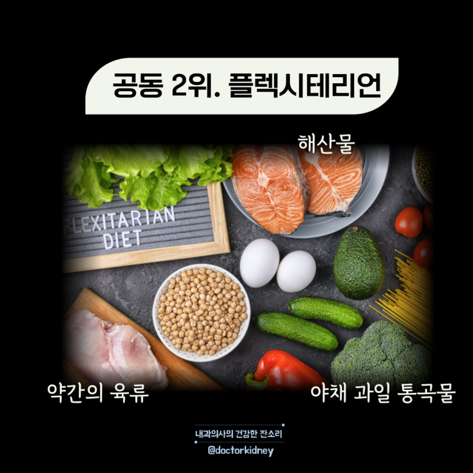

지중해 식단
DASH 식단
플렉시테리언 식단



지중해 다이어트 식단
1.매일 과일, 야채, 통곡물, 견과류, 올리브오일을 기본으로 합니다.
2.일주일에 2~3번씩 해산물, 생선과 닭고기, 유제품, 치즈, 계란을 적당히 즐깁니다
3.붉은 고기, 디저트 등의 간식은 한달에 한 번으로 제한 합니다.
4.레드 와인 한잔을 허용합니다.
DASH식단
DASH 식단은 칼로리에 따라 먹어야 할 음식의 양과 횟수를 구체적으로 제시합니다.
1.채소, 과일, 통곡물을 가장 많이 먹습니다.
2000kcal를 기준으로 통곡물은 매일 3~4컵, 채소는 4~5컵, 과일은 2~2.5컵을 먹습니다.
칼륨, 칼슘, 마그네슘,섬유질 등 혈압을 낮추는 영양소가 풍부합니다.
2.저지방 유제품, 살코기, 생선, 가금류, 견과류 및 콩류를 적당히 먹습니다.
3.나트륨, 단것, 첨가당, 포화지방과 지방이 많은 육류, 지방 유제품, 여래오일 등은 제한합니다.
*나트륨 섭취량을 일일 2,300mg 이하로 섭취할 것을 권합니다.
플렉시테리언 식단
1.콩, 완두통, 계란과 같은 비육류 단백질을 많이 먹습니다.
2.식단에 과일 재소, 통곡물, 유제품, 조미료를 포함합닏다.
3.점차적으로 고기 섭취량을 줄이고 일주일에 고기를 먹지 않는 날을 늘려 갑니다.
4.고기가 먹고 싶다면 전통적인 고기를 콩고기로 대체 해서 먹습니다.